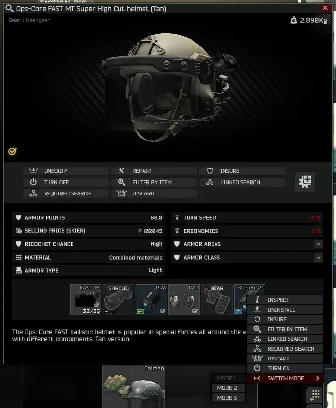
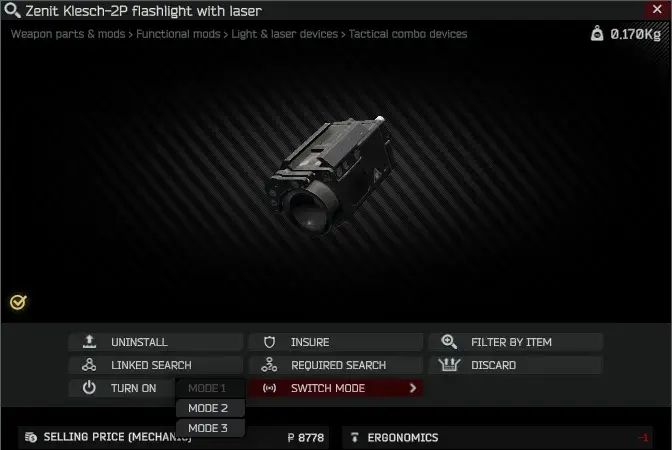
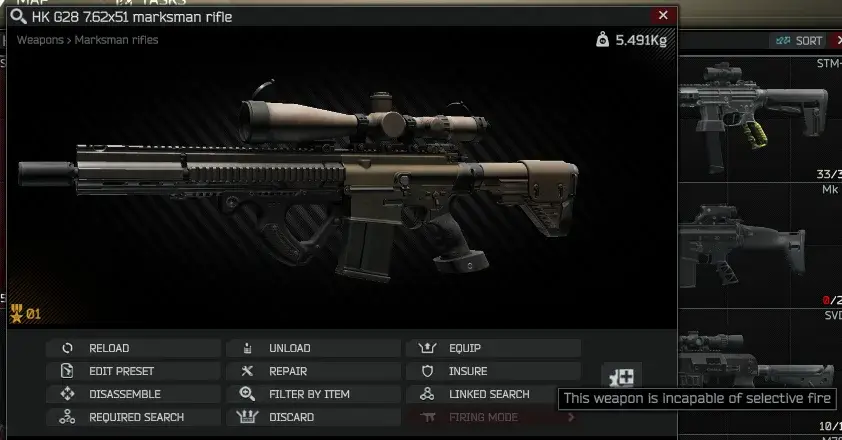
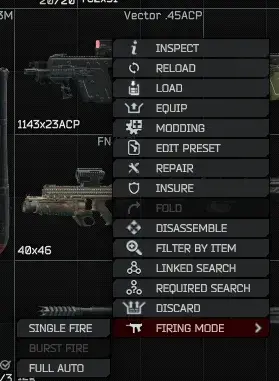

Item Context Menu Extended
- Downloads
- 20,237
- Favourites
- 23
- Mod lists
- 83
Installation:
Extract the ZIP to your SPT-AKI installation folder.
Note: This mod depends on my “Custom Interactions” library.
Description:
Currently included custom context menu items:
* “Firing mode” for weapons.
* “Active scope”, “Active mode” (incl. zoom) and “Zero distance” for sights.
* “Turn on/off” and “Active mode” for tactical devices.
Note: Auxillary scopes and sight/tactical modes have no names in the game, just an index.
You can change the context menu scaling from the mod’s settings.
If you have an idea of a useful menu item that should be added, let me know in the comments.
Only no-nonsense ideas will be considered.
Important: The game does not have a facility for saving any of these interactions to your server-side profile directly because they are literally impossible to do outside of raid. That will require a custom server-side solution I may include in a later version. If you use any of these interactions outside of raid, they will persist as long as the game is running, but will be saved server-side only when you enter a raid and then extract from it, with those items being in your gear.
A few screenshots:




Version
1.8.0
Compiled for client version 0.16.9.0.40087
Dependencies
Version
1.7.0
Compiled for client version 0.16.1.3.35392
Dependencies
Version
1.6.0
New: Add “Scale” setting to change the context menu scaling.
New: Add interactions for sights: Scope selection, Mode (incl. zoom) and Zero distance.
Compiled for client version 0.15.5.1.33420